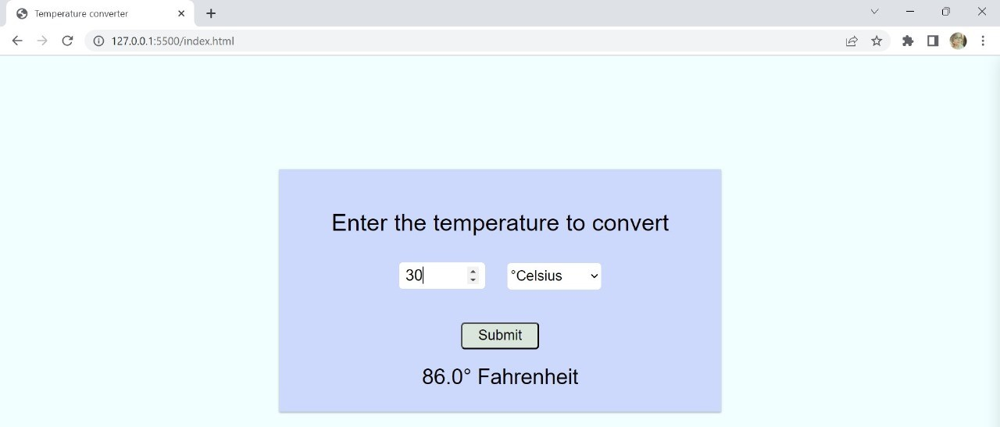
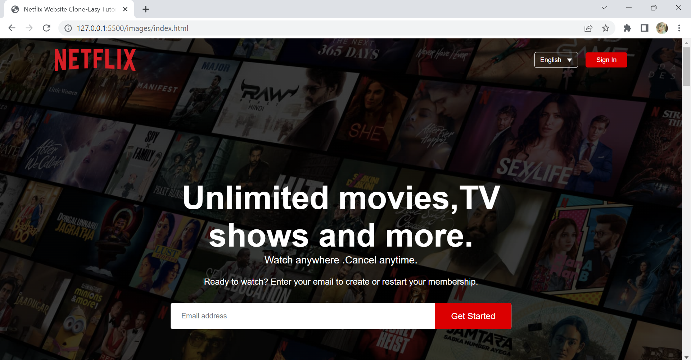

Features

Feature 1
Users can easily convert temperatures between different scales (e.g., Fahrenheit to Celsius) without the need for manual calculations.
Users can quickly obtain temperature conversions, saving time compared to performing calculations independently.

Feature 2
Personalized Content: Netflix's homepage provides personalized content recommendations based on your viewing history and preferences, making it easier to discover movies and TV shows you'll enjoy.
User-Friendly Interface: The homepage features a user-friendly and intuitive interface that allows for easy navigation, search, and browsing of the vast content library.
Accessibility: Netflix's homepage is accessible on a variety of devices, from smartphones to smart TVs, providing flexibility in how and where you can watch content.
Continuous Updates: The homepage is regularly updated with new releases and trending shows, ensuring that users stay up-to-date with the latest entertainment options.

Feature 3
Energy Efficiency: Automation systems can turn off lights when they are not needed, reducing energy consumption and lowering electricity bills.
Convenience: Automation allows you to control lighting remotely, set schedules, and create personalized lighting scenes for different moods and occasions..